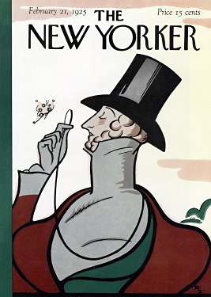
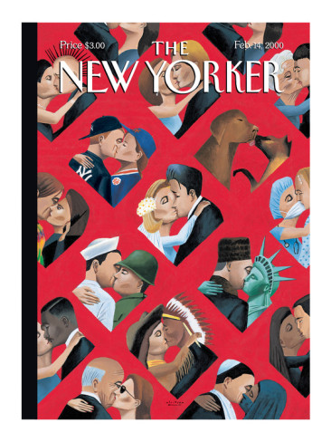

The New Yorker company has been publishing The New Yorker magazines since they published the first one on February 21, 1925. They have been changing their The New Yorker magazine slowly, which is called Slow Design. Since the core of The New Yorker magazine is Slow Design, people have different opinions about it. Some people think The New Yorker magazine is not dramatic, or it should be changing more dramatically, especially in nowadays where everything is dramatically and drastically changing. Although some people criticize their slowness and gradual changes, I believe that the magazine The New Yorker is on right track.
What I believe is that the design doesn't have to be dramatic and super-modern all the time even in nowadays. I think the design is literally everything in these days and the most important thing because it communicates with people and it controls people. Therefore, there must be whole kinds of design and preference of design. A slow concept Slow Design, which The New Yorker has been using, is the key of The New Yorker, which made it success. Even though the design is not slightly changed from 1925 in my opinion, it still works and attracts people to read it. The point is that people sometimes want something as it is. They prefer the original more than changed.
Some people might think the design of The New Yorker is too lazy to change and afraid to change. When I was in Korea where I'm from, there were some snacks I always ate. However, they changed the design of the container a few years ago. When I tried it, I felt like they changed the taste or recipe of the snack. I don't know they actually did or not because they didn't say anything about changing the taste of it. However, they definitely changed the whole content of the snack, which is the design. I strongly believe that design is the most important aspect of brand and product because the design controls the mood, atmosphere, expectation, feeling, and etc. Before we even open it, we expect and estimate the product when we see their design of product or logo. What makes me think of this is because I really enjoy to read books about psychology and human relationships, I saw lots of book where authors talk about how human see their lives in their views, which make the reality not a true reality. What we see and feel is not a reality but our reality. Thus, when we see and encounter the design of the brand and products, we automatically see in our own vision and estimate the product, which is the process that we already believe in ourselves what it's going to be. So what I believe is that the estimation of the design of product or cover of the magazine is done when we see their design before we even see the contents of it. Many people definitely prefer original design and miss it when they change their design to new one. In terms of keeping the original design, The New Yorker magazine is successful.
One of the most important aspect of design is typeface. There are many core companies, which buys the typefaces that were created by other people. However, The New Yorker magazine chose to design its own typeface. Irvin type, which was created by Rea Irvin, is used as the font of main title The New Yorker for more than eighty years. What I believe that, Irvin type is a core of the cover of the magazine The New Yorker and it amazingly matches with the concept of the illustration on the cover, or the illustration matches with the Irvin type. The point is their combination is the reason that they had a success and they could keep their magazine successful for almost ninety years without drastic changes. As I mentioned above, Slow Design works sometimes because people want the original and they don't want them to be changed. However, the reason they could do it was because the design of The New Yorker is terrific. Because Irvin type and the design were impressed by people, they don't have to change, or they can't change drastically. Also, since I believe that the design is everything, The New Yorker caught people's mind, even before they open the book with amazing combination of Irvin type and the illustration of the cover. The magazine The New Yorker couldn't break the core form of the cover because they knew it's everything of the magazine and it's Slow Design.

The design should gratify what people desire. I believe the design exists to attract people and to satisfy. People feel touched and comfortable when they see good design. Design is everything in the world. It's everywhere and everything we see everyday. Therefore it's one the most important thing of human life. The designers and critics have their own styles since they see the world differently and have different backgrounds. Some people prefer drastic changes of design and super-modern design. Some people prefer the design never changes. It's always impossible to satisfy all people in the world at the same time. What I believe is whether it's dramatic design or Slow Design, it's a great design if it satisfies many people relatively. Some people criticize Slow Design of the magazine The New Yorker. I think What the magazine The New Yorker should do is they acknowledge the criticism of too slow changes and keep their Slow Design as it is if that's what they are planning to. In my opinion, I think the Slow Design is an amazing concept of design. I really appreciate that the magazine The New Yorker didn't change the core form of the cover of the magazine for eighty years. I also believe no change they made was a challenge to them since the world changes drastically and, of course, the design of other products as well.